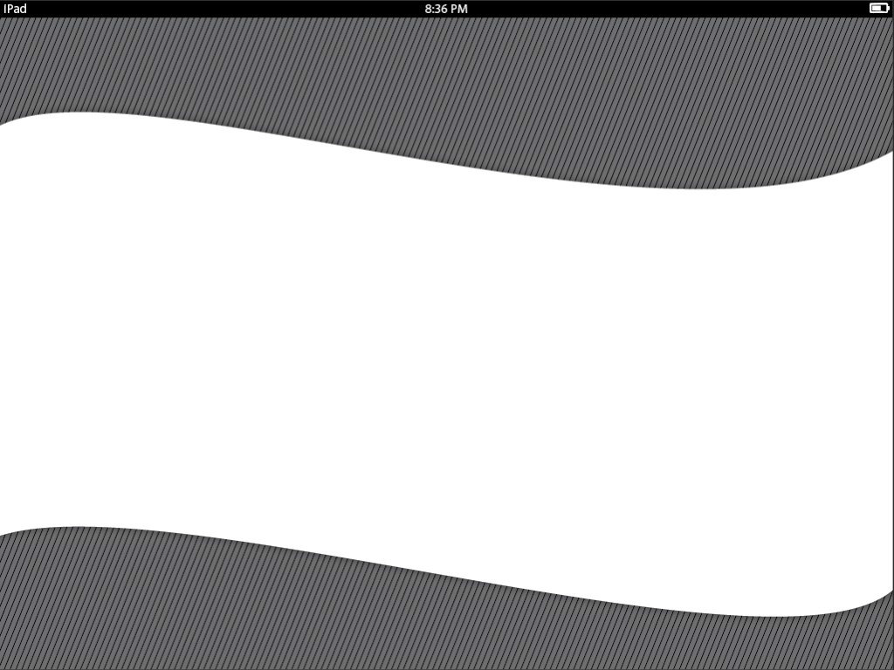
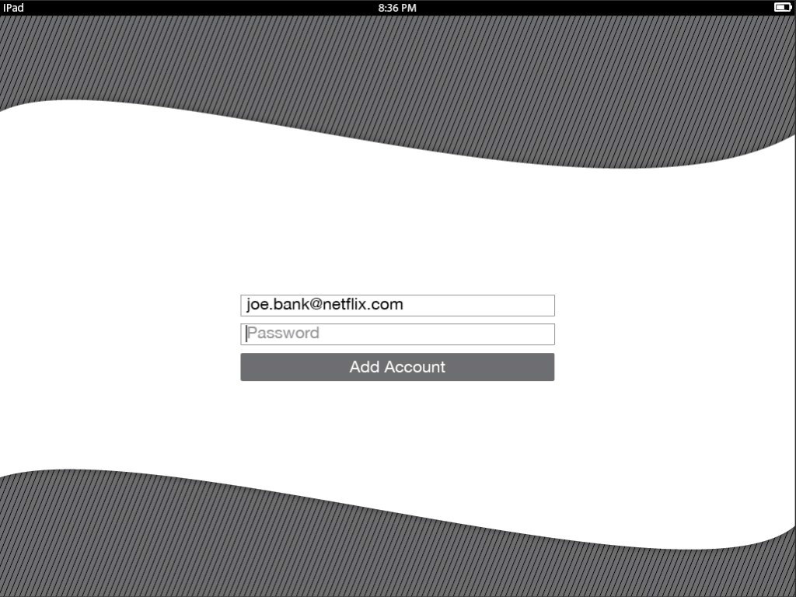
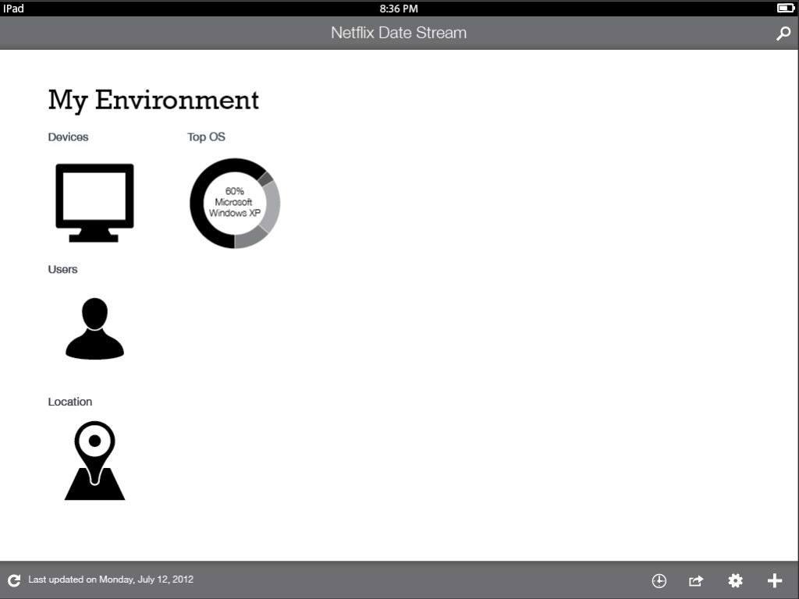
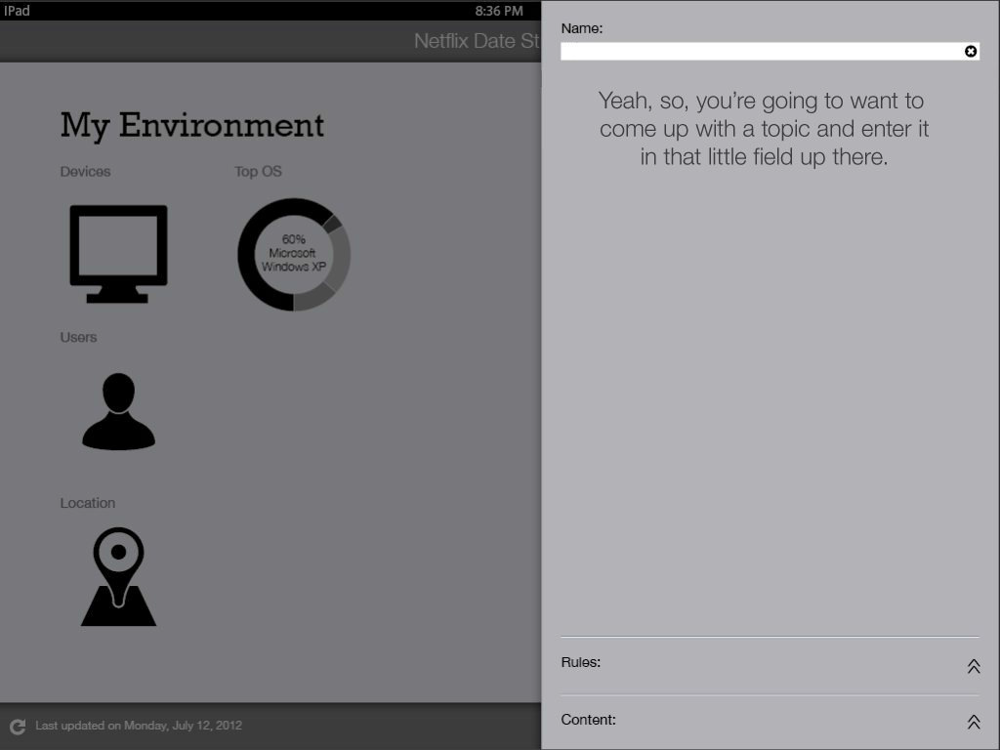
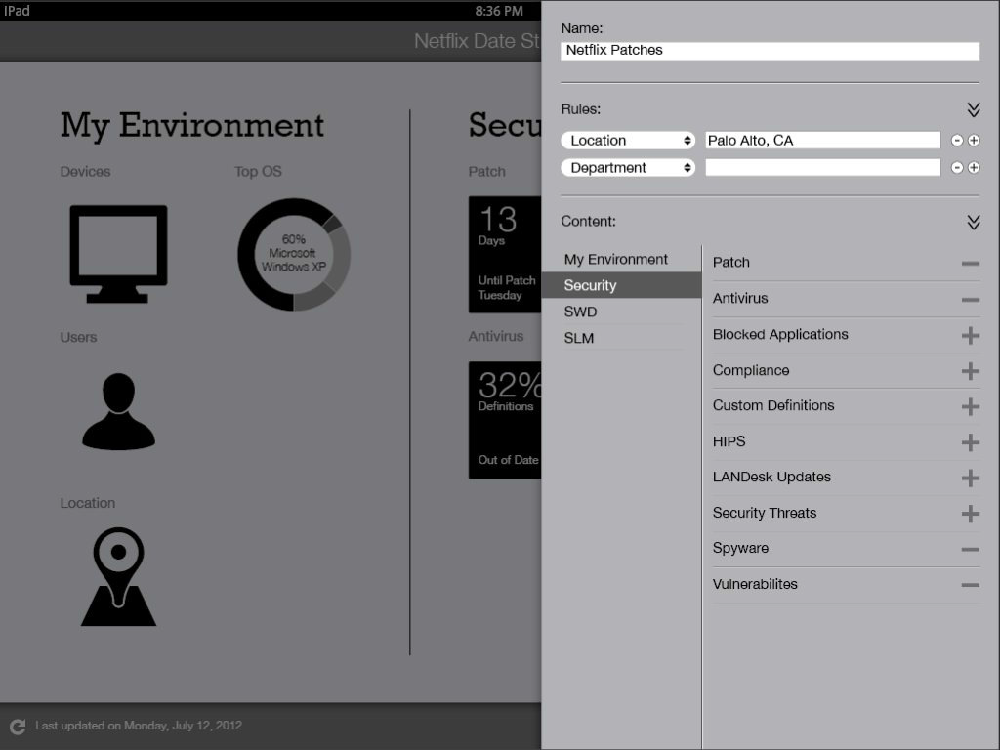
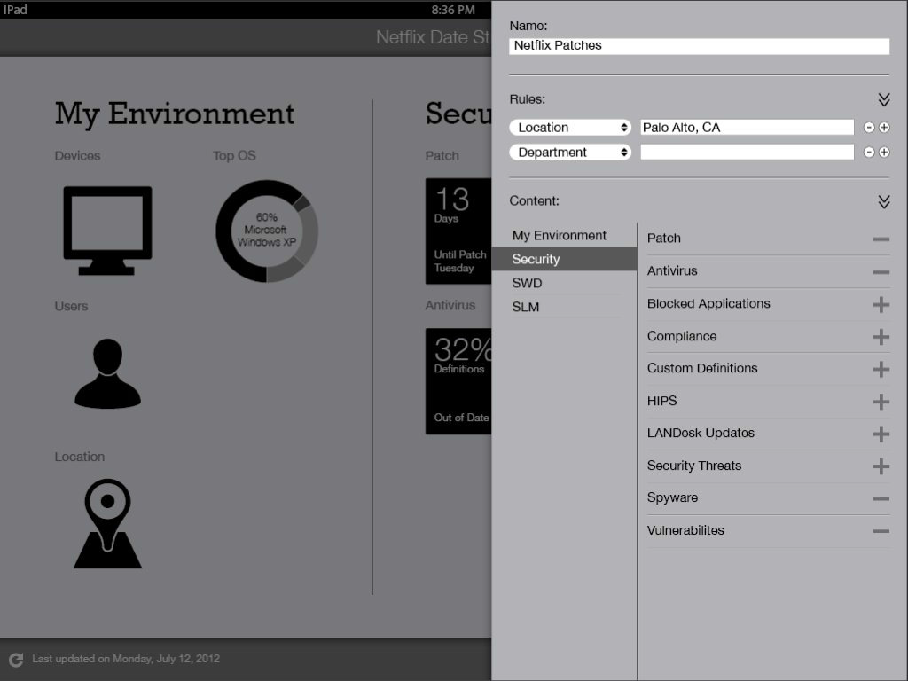
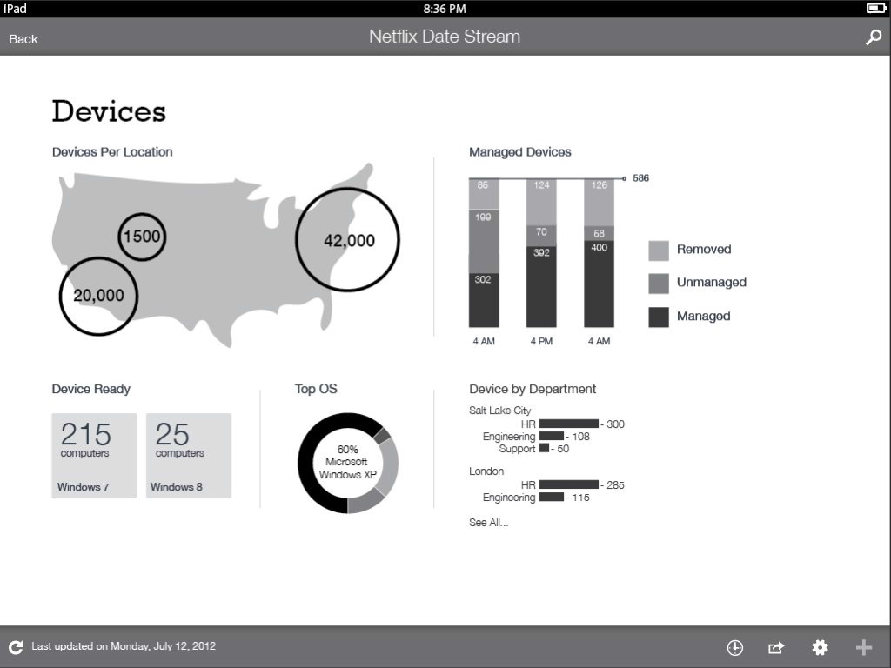
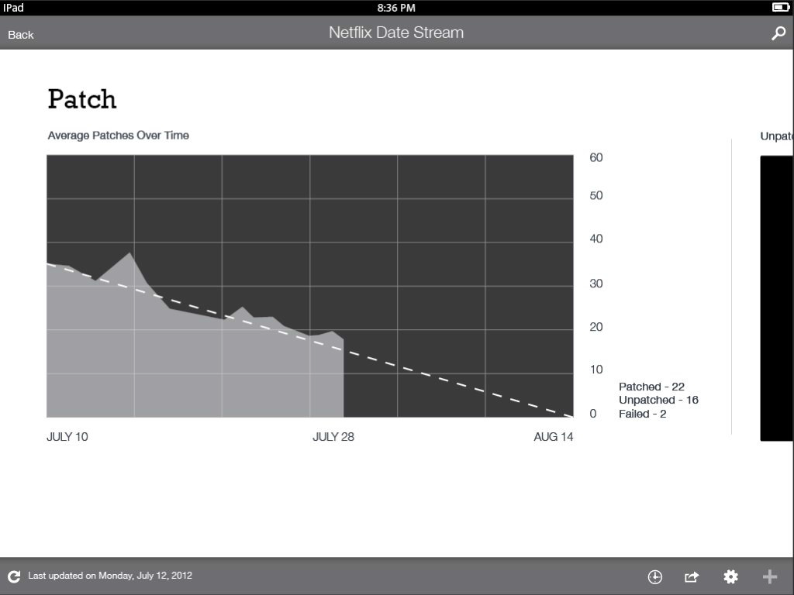
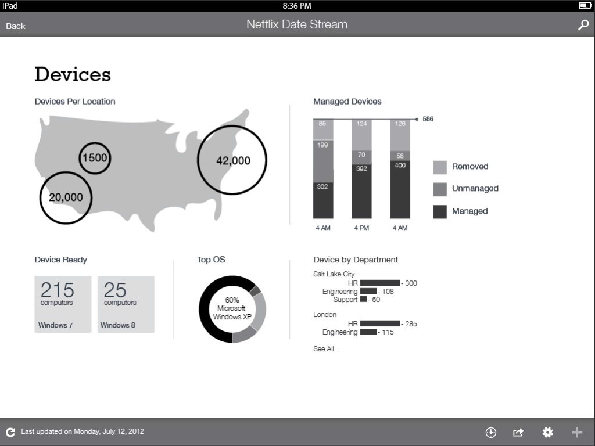
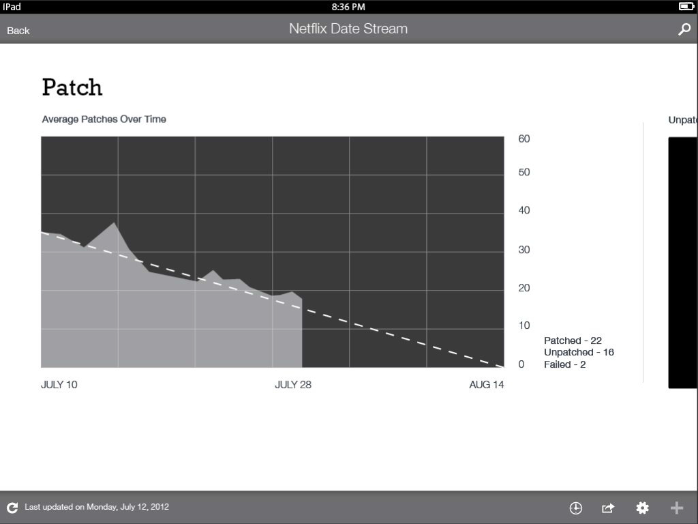

While working for LANDesk Software I got the privilege to help envision a new product catered towards their customers, which would show statistics of the LANDesk suite. With just an idea in mind, we validated with users, made changes, and created a product that would actually help them do their job. I was also in charge of the graphical assets that the development team would need to publish this application to the app store.
This was one of my first projects I led that was fed by a lot of travel and user interviews, testings, and buy off. I was in charge of the look and feel of the product, wireframing and understanding the architecture, and the research of the user (or more like finding the user).
Both UX and the product team went out with a hypothesis of who the user could be. It made sense at first that a CIO or even a CEO would need to see LANDesk analytics to understand the value of the products being using inside of their organization. Over and over we heard that reports, charts, and other data was being presented to both the CEO and CIO but there was more to learn. We thought it would be great if those indidivuals wouldn't have to ask to see the data and just quickly get it on an application.
After our first sit down with a user we discovered that these charts were in fact getting presented to the CEO and CIO but those individuals had little time or care to navigate through any type of application. What we did find was the IT administrator did need this type of tool and was the person who was advocating and presenting the data up the chain in their organization.
Here is a progression of the work I did. Starting at lo-fidelity wireframes and ending with hi-fidelity mockups.
   
 


 


